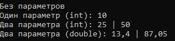
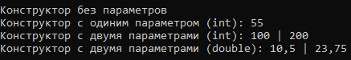

Перегрузка методов
Для перегрузки метода достаточно объявить разные его варианты
class Overload
{
public void OvlDemo()
{
Console.WriteLine("Без параметров");
}
public void OvlDemo(int i)
{
Console.WriteLine("Один параметр (int): "+i);
}
public void OvlDemo(int a, int b)
{
Console.WriteLine("Два параметра (int): "+a+" | "+b);
}
public void OvlDemo(double a, double b)
{
Console.WriteLine("Два параметра (double): "+a+" | "+b);
}
}
Overload ovl = new Overload();
ovl.OvlDemo();
ovl.OvlDemo(10);
ovl.OvlDemo(25, 50);
ovl.OvlDemo(13.4, 87.05);
В результате:

Перегрузка конструкторов
class Overload
{
public Overload()
{
Console.WriteLine("Конструктор без параметров");
}
public Overload(int i)
{
Console.WriteLine("Конструктор с одиним параметром (int): "+i);
}
public Overload(int a, int b)
{
Console.WriteLine("Конструктор с двумя параметрами (int): "+a+" | "+b);
}
public Overload(double a, double b)
{
Console.WriteLine("Конструктор с двумя параметрами (double): "+a+" | "+b);
}
}
Overload ovl1 = new Overload();
Overload ovl2 = new Overload(55);
Overload ovl3 = new Overload(100, 200);
Overload ovl4 = new Overload(10.5, 23.75);
В результате:

Вызов перегружаемого конструктора с помощью ключевого слова this
class XYCoord
{
public int x, y;
public XYCoord():this(0, 0)
{
Console.WriteLine("В конструкторе XYCoord()");
}
public XYCoord(XYCoord obj):this(obj.x, obj.y)
{
Console.WriteLine("В конструкторе XYCoord(obj)");
}
public XYCoord(int i, int j)
{
x = i;
y = j;
Console.WriteLine("В конструкторе XYCoord(int, int) "+x+" "+y);
}
}
XYCoord t1 = new XYCoord();
XYCoord t2 = new XYCoord(8, 9);
XYCoord t3 = new XYCoord(t2);
В результате:

Created with the Personal Edition of HelpNDoc: Create cross-platform Qt Help files